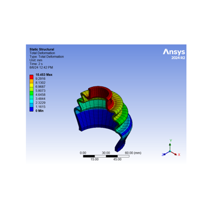

Examples#
These examples demonstrate the basic simulation capabilities of Ansys Mechanical using remote sessions.
Simple workflows#
This section demonstrates how you can use Mechanical capabilities from Python to perform Mechanical simulations. This includes importing the geometry, meshing, setting up and running the solver, and reviewing the results.


PyMechanical tips#
This section demonstrates miscellaneous tips and tricks for using PyMechanical.


Basic examples#
This section demonstrates basic usage.
Technology showcase examples#
This section demonstrates the technology showcase examples.

Nonlinear Analysis of a Rubber Boot Seal Model
Nonlinear Analysis of a Rubber Boot Seal Model
Gallery generated by Sphinx-Gallery